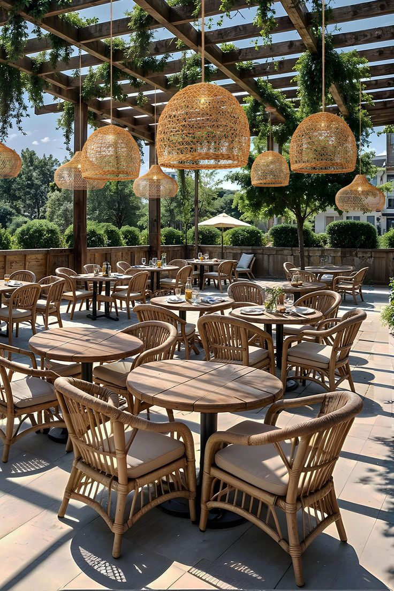

Espace Jeux Téranga
Bonne humeur garantie autour du tapis vert. Défiez vos amis !

Divertissement
L'espace téranga

Teranga Food met en avant les saveurs du Sénégal à travers des recettes traditionnelles et modernes. Notre objectif est d'offrir à chaque client une expérience culinaire conviviale et authentique. Tout a commencé dans une petite cuisine familiale à Dakar, où notre fondatrice cuisinait chaque jour pour ses proches. Sa passion pour les saveurs authentiques du Sénégal et son désir de partager l'hospitalité légendaire de son peuple l'ont poussée à ouvrir Teranga Food en 2020. Aujourd'hui, notre restaurant est devenu un lieu de rencontre incontournable, où chaque plat raconte une histoire et chaque repas est une célébration de la culture sénégalaise.
⭐
Des ingrédients soigneusement sélectionnés pour des plats
d'exception à chaque service.
🧹
Des standards irréprochables en cuisine et en salle
pour votre confort et sécurité.
👋
La Teranga ,l'hospitalité sénégalaise au cœur de chaque
interaction avec nos clients.
🏡
Des recettes transmises de génération en génération,
cuisinées avec amour et authenticité.

Fondatrice et cheffe du restaurant

Cheffe patissière

Livreur

Serveur

Patissière

Cheffe comptable

Serveuse

Responsable salle

🐟
🍎
🥜
🪴
🥕
🥤